Thunder ⚡
A private, invite-only real-time messaging platform built end-to-end — from database schema to a deployed web app and a native Android client — on a production-grade full-stack TypeScript + Kotlin codebase.
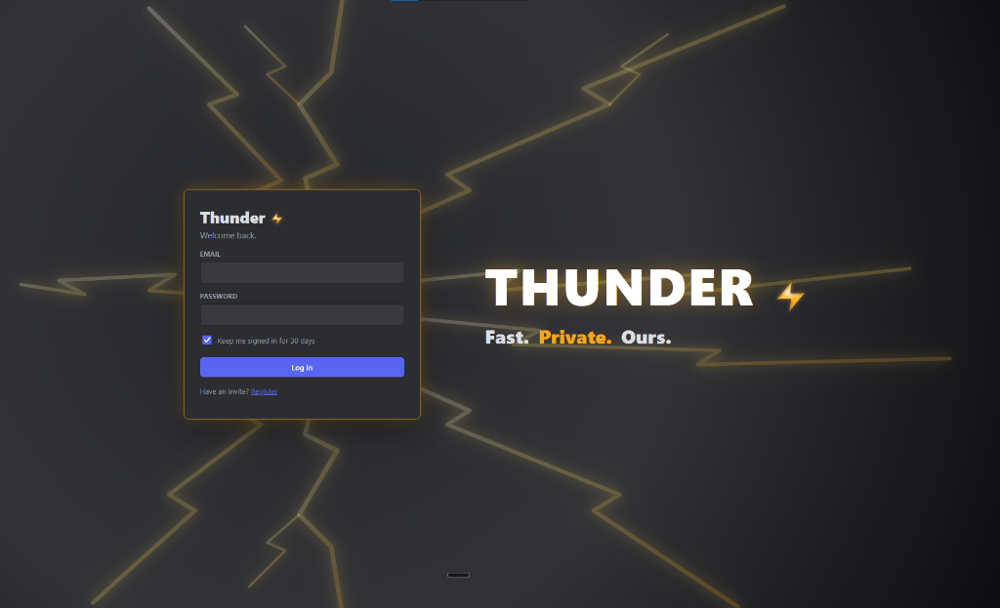
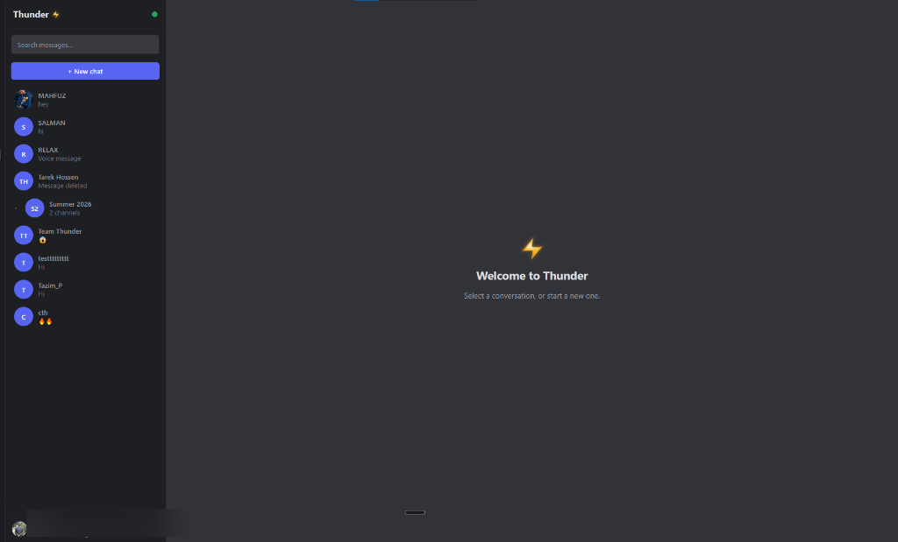
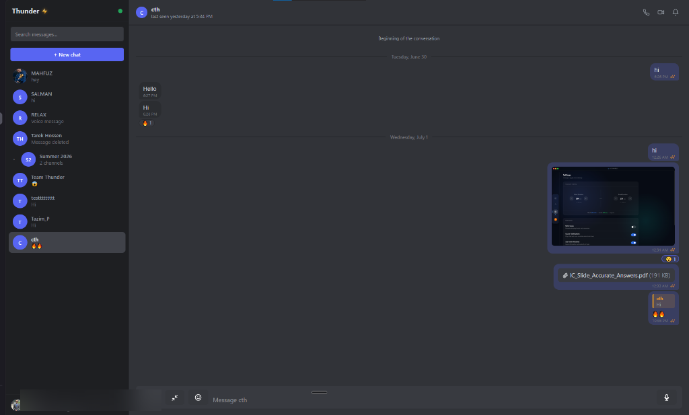
Thunder is invite-only. To get access, message me on Telegram with your email and I'll send you an invite code.
Text me on Telegram for an inviteOverview
Thunder is a full-stack, production-grade real-time messaging platform I built completely from scratch — including the database schema, REST API, WebSocket gateway, file storage pipeline, and the Next.js web client. It is intentionally invite-only and private.
The platform supports direct messages and group chats in real time, image/file/voice note sharing, peer-to-peer voice and video calls, server-side message search, live presence and typing indicators, and an admin panel — all running at zero hosting cost.
Technology Stack
Frontend
- Next.js (App Router)
- React & TypeScript
- Discord-style two-panel UI
- PWA support
- Vercel
Backend API
- NestJS (REST)
- Socket.IO (WebSocket)
- Fly.io deployment
- ffmpeg (voice transcoding)
Database & Storage
- Neon Postgres
- Prisma ORM
- Cloudflare R2
- Provider-agnostic storageKey abstraction
Auth & Realtime
- Argon2 password hashing
- JWT access / refresh token rotation
- WebRTC (1-on-1 calls)
- Cloudflare TURN relay
Android Client
- Kotlin & Jetpack Compose
- Hilt DI · MVVM · Coroutines/Flow
- Retrofit · encrypted token store
- FCM push · foreground-service calls
Core Engineering Highlights
Race-Free Realtime Engine
The realtime layer uses a custom Socket.IO gateway with server-assigned sequence numbers, eliminating the race conditions common in naïve WebSocket implementations. Messages are ordered definitively server-side. On reconnect, the client automatically detects gaps in its local sequence and requests a fill-sync, ensuring no message is ever lost due to a dropped connection.
Invite-Gated Auth with JWT Rotation
New users can only join via single-use invite codes. Passwords are hashed with Argon2 (the Argon2id variant, PHC winner). Sessions are managed with short-lived JWT access tokens paired with rolling refresh tokens — revoking a refresh token immediately invalidates the session.
Voice Notes with Safari/iOS Compatibility
Voice notes recorded in the browser (WebM/Opus) are server-transcoded via ffmpeg to AAC/MP4 before storage. This is a known pain point: Safari does not support WebM, so without server-side transcoding, voice messages would be unplayable on iOS. All transcoded files are stored on Cloudflare R2 behind a provider-agnostic storageKey abstraction so the storage provider can be swapped without touching application code.
Peer-to-Peer Voice & Video Calls
1-on-1 voice and video calls use WebRTC with a Cloudflare TURN relay for mobile and CGNAT reliability. Direct browser-to-browser media streams are established via the Socket.IO signalling channel. The TURN server ensures calls succeed even when both peers are behind strict NATs or mobile carrier networks.
Optimistic Message Sending
The frontend uses an optimistic UI pattern — messages appear instantly in the chat UI with a "Sending…" state before the server confirms receipt. On success, the temporary optimistic message is replaced by the server-confirmed message (with its permanent ID and sequence number). On failure, it displays a retry option.
Native Android Client
Beyond the web app, Thunder has a fully native Android client — roughly 14,800 lines of Kotlin across ~73 files, built in Jetpack Compose with Hilt dependency injection and an MVVM architecture. It deliberately hits the same NestJS REST API and Socket.IO contract as the web client, so both platforms stay in lockstep with a single backend.
Why Native (not a WebView)
The Android app was built native specifically for WhatsApp/Telegram-grade calling and notifications — things a wrapped web view can't do well: high-priority FCM data messages, a foreground service, a full-screen incoming-call UI over the lock screen, and Android Telecom integration.
Shared Contract, Type-Safe End to End
The web app's shared TypeScript contract (DTOs, enums, Socket.IO events) is ported to Kotlin and kept in sync with the backend, giving the same type-safe realtime messaging model on the phone that the web client enjoys in the browser.
Calling: P2P + SFU Group Calls
1-on-1 calls use peer-to-peer WebRTC with glare-free offer-after-accept signalling; group calls run through a Cloudflare Realtime SFU (publish/pull tracks). The incoming-call experience surfaces a full-screen UI over the lock screen backed by a foreground service and Telecom.
Resilient Networking & Push
Networking is built on Retrofit with an encrypted token store and single-flight 401 → refresh → retry. The Socket.IO client refreshes its token before every handshake and gap-fills missed messages on reconnect. Push is delivered via a config-gated FCM path added to the NestJS API — a high-priority, data-only sender that prunes dead tokens and drives message and incoming-call notifications with inline reply and mark-read actions.
The Android client is feature-complete to web parity and compiles clean; live on-device call verification is the next milestone.
Android App — Screenshots
The native Android client in action — same Thunder, on your phone. Tap any shot to view full size.
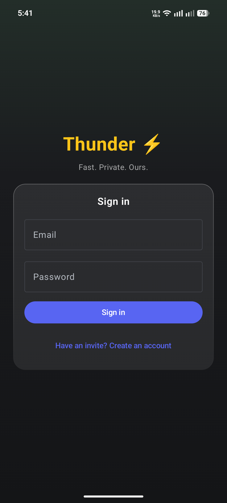
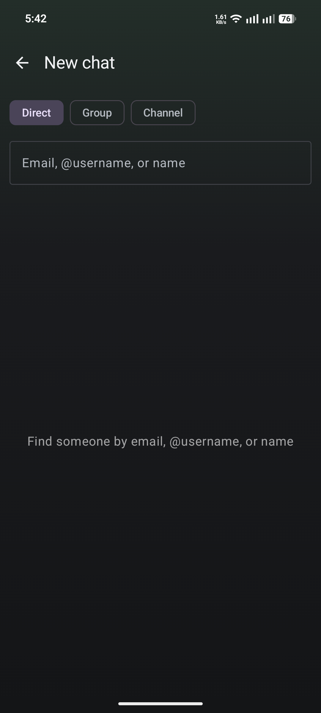
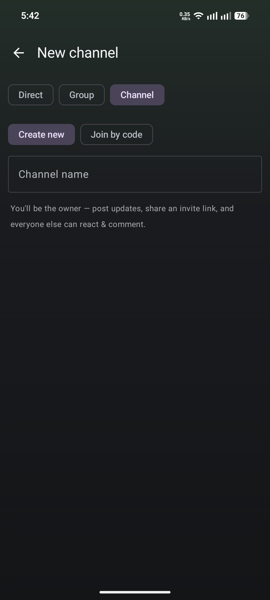
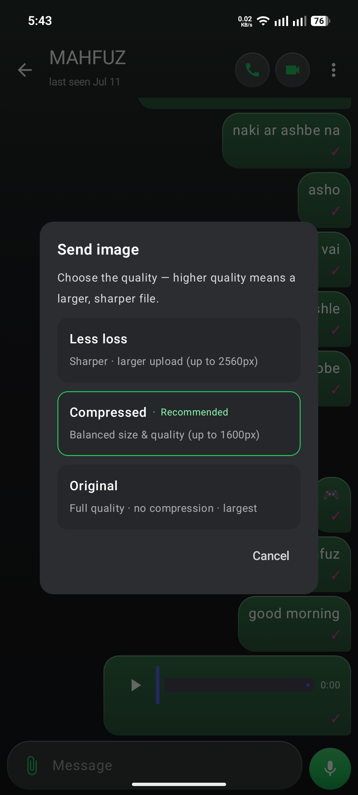
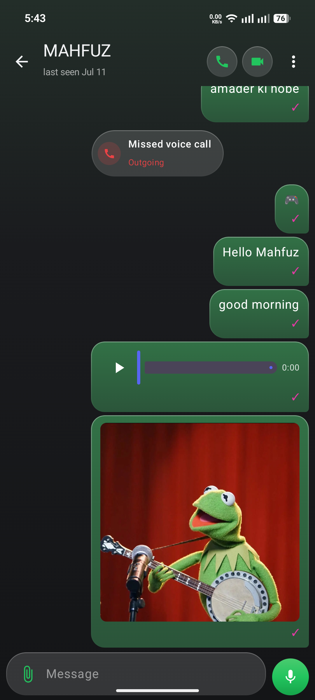
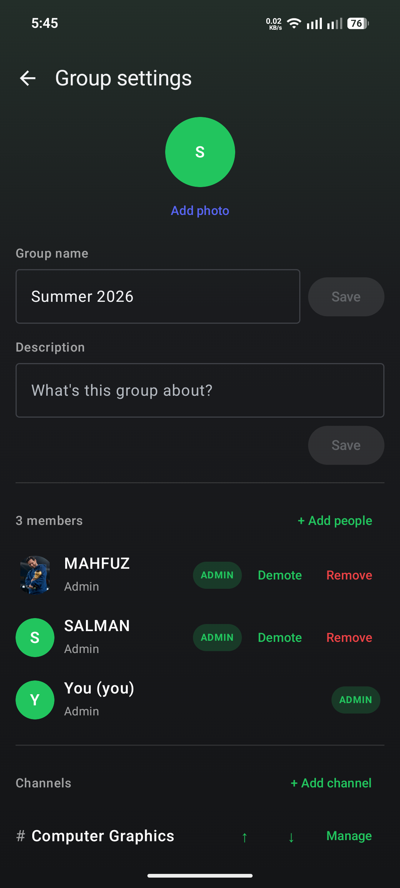
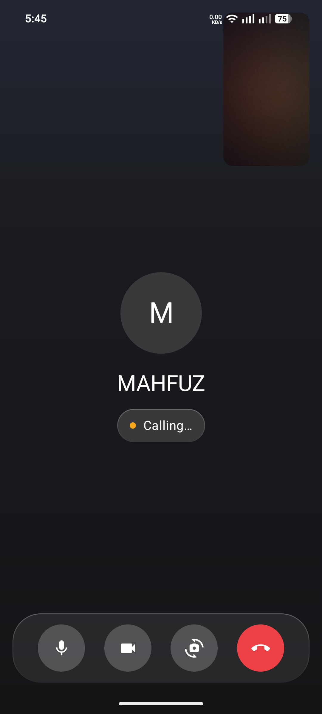
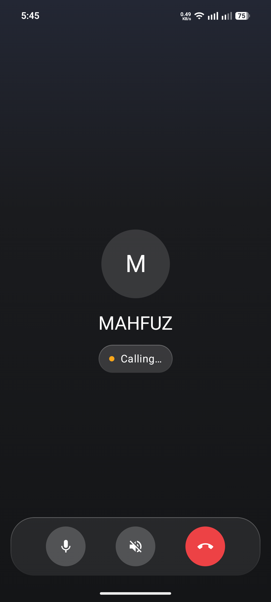
Features Shipped
Infrastructure & Cost
The entire platform runs at zero hosting cost by combining free tiers across providers:
- NestJS API on Fly.io — free tier with always-on machines in the nearest region.
- Neon Postgres — serverless Postgres with a generous free tier and automatic scale-to-zero.
- Cloudflare R2 — S3-compatible object storage with no egress fees and a free tier for file/voice/image storage.
- Next.js on Vercel — frontend deployed on Vercel's hobby plan.
- Cloudflare TURN — TURN relay for WebRTC NAT traversal via Cloudflare Calls free tier.
Challenges & Solutions
Message Ordering Under Concurrent Load
The challenge: In a high-concurrency chat, two clients sending messages simultaneously could arrive at the server in a different order than the users sent them, causing visual reordering in the UI.
The solution: The server assigns a monotonically increasing sequence number to each message per conversation inside a database transaction. The client sorts its local message list by sequence number, not by arrival time — making the displayed order authoritative and deterministic.
Voice Notes on iOS/Safari
The challenge: Browsers record audio in WebM/Opus format, which Safari and iOS cannot play.
The solution: The API server pipes the uploaded audio blob through ffmpeg, transcodes it to AAC in an MP4 container, and stores only the transcoded file. All clients — including Safari — receive a universally-playable MP4 file.
Reliable Calls on Mobile Networks
The challenge: Mobile carriers and many home routers use CGNAT, which blocks direct WebRTC peer-to-peer connections.
The solution: Cloudflare's TURN relay is used as a fallback. The ICE negotiation automatically upgrades from host → STUN → TURN, so calls work even in the worst-case network environment.